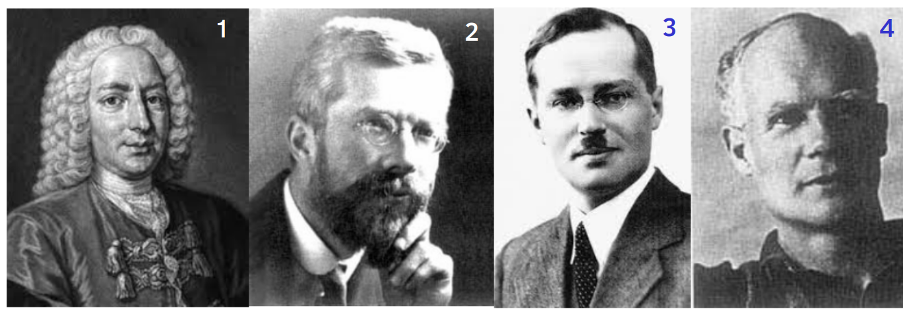
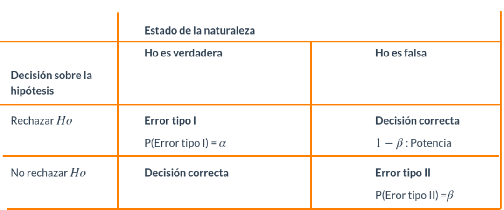

El origen de los estudios, relacionados con las pruebas de hipótesis estadísticas, se sitúa alrededor de 1738, cuando en un ensayo escrito por Daniel Bernoulli(1) aparece el cálculo una estadística de prueba para ensayar su hipótesis en el campo de la astronomía. Entre 1915 y 1933 se desarrolla esta formulación gracias a los estudios realizados por tres grandes autores: Ronald Fisher(2), Jerzy Neyman(3) y Egon Pearson(4). Generandose así dos enfoques diferentes.
Una hipótesis estadística es una afirmación o conjetura acerca de los parámetros de la distribución de probabilidades de una población. Si la hipótesis estadística especifica completamente la distribución, entonces ella se llama Hipótesis Simple, de otra manera se llama Hipótesis Compuesta.
Desde el punto de vista clásico, todas las pruebas de hipótesis trabajan en base a ciertos principios que consideran:
Es la hipótesis a probar, ésta NO se rechaza si de la muestra no se obtiene suficiente evidencia para rechazarla.
La hipótesis Ho se contrasta con la hipótesis Ha, y ésta
última corresponde a valores alternativos del parámetro planteados en la
hipótesis nula. La hipótesis \(Ha\) se
considera cierta si existe suficiente evidencia para rechazar la
hipótesis nula.
Es una función de la muestra que contiene información sobre el
parámetro de interés, la que nos permite decidir sobre el rechazo de la
hipótesis nula, Ho . Es tambien una variable aleatoria que
sigue una función de distribución conocida como por ejemplo:
Para una muestra determinada se obtiene un valor del estadístico de prueba, a partir del cálculo y se determina el rechazo o no, de la hipótesis nula.
También llamada región crítica (RC), define los valores
del estadístico de prueba para los cuales la información muestral
contradice la hipótesis nula. Estos valores nos permitirán adoptar una
regla de decisión consistente. Una prueba de una hipótesis estadística
es un procedimiento que permite, mediante el contraste entre la
información muestral y lo propuesto en una hipótesis, decidir sobre su
rechazo.
Una prueba de una hipótesis estadística es un procedimiento que permite, mediante el contraste entre la información muestral y lo propuesto en una hipótesis, decidir sobre su rechazo.
De esta manera, como una regla de decisión, si para una muestra
particular el estadístico de prueba (valor calculado) cae dentro de la
región crítica, rechazaremos la hipótesis nula Ha en favor
de la hipótesis alternativa Ha. En cambio, si el valor
calculado no cae dentro de la RC, no podremos rechazar la hipótesis nula
y por tanto decimos que la información contenida en la muestra no ofrece
suficiente evidencia estadística que nos permita
rechazarHo`, ASUMIMOS que la hipótesis nula es cierta.
Cuando se decide ya sea en favor o en contra de una determinada prueba de hipótesis, es posible estar en una de las cuatro situaciones descritas en la siguiente tabla:

Existen dos situaciones en las que se comenten errores después de tomar una decisión:
Cuando se rechazamos una hipótesis nula que en realidad es verdadera.
Tomando como simil la situación donde un médico desea determinar si un
paciente está sano o enfermo (Ho: SANO vs Ha:
ENFERMO), es posible que concluya que el paciente está enfermo (rechace
Ho) cuando en verdad esta persona esta sana. En términos de
probabilidad este error se debe de representar como:
\[P(\text{Rechazar } Ho | Ho \text{ es verdadera})= \alpha\]
Cuando no se rechaza una hipótesis nula que en realidad es falsa. Utilizando el ejemplo del médico, diríamos que cuando el medico indica que el paciente esta sano, cuando esta realmente enfermo, incurre en un error frecuente cuando algunos pacientes son asintomáticos y aunque tienen la enfermedad, sus exámenes médicos salen negativos. En este caso la probabilidad se representa como:
\[P(\text{No rechazar} Ho | Ho \text{ es
falsa}) \]
No es posible minimizar simultáneamente, las probabilidades de los errores tipo I y II, ya que en la medida que uno disminuye el otro aumenta, como se muestra en la figura siguiente, en la que claramente se ve que la reducción del área \(\alpha\) (probabilidad de error tipo I), implica el aumento del área \(\beta\) (probabilidad de error tipo II).
El valor-p corresponde al área delimitada por el EdeP en
el sentido que indica la RdeR de la prueba a contrastar. Es
decir que corresponde a la probilidad máxima de cometer
error tipo I.
Gil, Jacky F.; Castañeda, Javier A (2005) lo definen como :
El resultado de la prueba de hipótesis se basa principalmente en el cálculo, en términos de probabilidad, de la fuerza de los hallazgos a favor de la hipótesis nula. Esta probabilidad recibe el nombre de valor-p, y se define como la probabilidad de cometer un falso positivo por efecto del azar, cuando la hipótesis nula es verdadera.
Si el \(EdeP\) cae en la \(RdeR\), entonce se rechaza la \(Ho\) y se ACEPTA \(Ha\) como verdadera. Si por el contrario el \(EdeP\) NO cae en la \(RdeR\), entonces NO SE RECHAZA \(Ho\), no existe suficiente evidencia para rechazarla, se ASUME que \(Ho\) es verdad.
Si \(\alpha >\) valor-p entonces se rechaza \(H_{0}\), se ACEPTA \(Ha\) como verdadera. Si por el contrario \(\alpha <\) \(valor-p\), no rechazamos \(Ho\), se ASUME que \(Ho\) es verdad.
El \(valor-p\) se interpreta como el error que puedo cometer al rechazar \(Ho\), siendo esta verdadera (cometer \(Error\) \(tipo\) \(I\)). Si este valor es considerado como pequeño, se rechaza \(Ho\), se ACEPTA \(Ha\). Si por el contrario se considera este valor grande, entonce no rechazo \(Ho\), se ASUME que \(Ho\) es verdad.